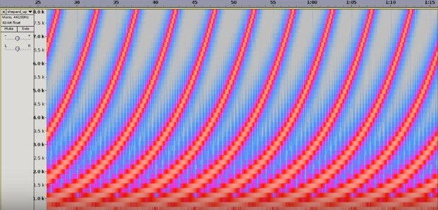

Orquestación I
Clase 001

Shepard tone
“Lontano” (1967)
György Ligeti
Ancla Temporal (conversación)
Correo del profe
felixpinok@gmail.com
Postdata
P.D. Traer para la próxima clase, música de creación propia para orquestar.
001
[Clases.pdf]